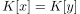
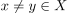
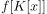

totaler Unzusammenhang unter stetigen Bijektionen
1. Satz
Seien  und
und  topologische Räume und
topologische Räume und  eine stetige Bijektion.
Falls
eine stetige Bijektion.
Falls  total unzusammenhängend ist, so ist auch
total unzusammenhängend ist, so ist auch  total unzusammenhängend
total unzusammenhängend
2. Beweis
Angenommen ist nicht total unzusammenhängend, so existiert eine Zusammenhangskomponente  für .
Daraus folgt aus dem topologischen Zwischenwertsatz, dass das Bild  zusammenhängend sein muss, Widerspruch.